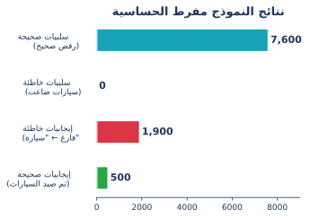
أساسيات Ultralytics YOLO: الجزء الرابع
التقييم والنشر (Evaluation & Deployment)
7. تقييم النموذج
ما مدى جودة نموذجك فعلياً؟
أساسيات التصنيف الثنائي
كل توقع يخرج من النموذج يقع في واحدة من أربع فئات. مثال: اكتشاف “سيارة”
| Prediction: سيارة | Prediction: ليست سيارة | |
| الحقيقة: سيارة | ✅ إيجابي صحيح (TP) اكتشاف صحيح |
❌ سلبي خاطئ (FN) سيارة تم تفويتها |
| الحقيقة: ليست سيارة | ⚠️ إيجابي خاطئ (FP) إنذار خاطئ |
✅ سلبي صحيح (TN) رفض صحيح (بقعة فارغة) |
سيناريو: كاميرا المواقف الذكية
كاميرا عند مدخل موقف سيارات تصنف كل إطار كـ سيارة موجودة أو لا يوجد شيء:

بيانات الاختبار: 24 ساعة، 10,000 إطار (إطار كل 9 ثوانٍ تقريباً)
| الحالة | العدد | النسبة |
|---|---|---|
| سيارة موجودة | 500 | 5% |
| بقعة فارغة | 9,500 | 95% |
في معظم الأوقات، الموقف يكون فارغاً.
مشكلة “الدقة” (Accuracy)
تخيل نموذجاً “كسولاً” يتوقع دائماً “فارغ” مهما رأى:
- يجد 0 سيارات (فشل في كل السيارات)
- يصيب في كل الـ 9,500 بقعة فارغة
\[Accuracy (الدقة) = \frac{9{,}500}{10{,}000} = 95\%\]
95% دقة! — ومع ذلك لم يكتشف سيارة واحدة. هذه هي مشكلة اختلال توازن البيانات (Class Imbalance).
لغة التقييم: كيف يرى النموذج العالم؟
لفهم دقة النموذج، نستخدم أربعة مصطلحات أساسية تصف “إصابته” أو “خطأه”:
| المصطلح | المعنى البسيط | مثال كاميرا الأمان (لص) | النتيجة |
|---|---|---|---|
| True Positive (TP) | صيد صحيح | الكاميرا رصدت شخصاً، وطلع فعلاً “لص”. | نجاح! ✅ |
| False Positive (FP) | إنذار خاطئ | الكاميرا دقت جرس الإنذار، لكن طلع “قطة”. | إزعاج 📣 |
| False Negative (FN) | صيد ضائع | اللص دخل البيت، والكاميرا لم ترسل أي تنبيه. | خطر! 🙈 |
| True Negative (TN) | تجاهل صحيح | لم يمر أحد، والكاميرا بقيت هادئة. | أمان 💤 |
مصفوفة الحيرة (Confusion Matrix)
هي مجرد “جدول” يجمع كل الحالات السابقة لنعرف أين يقع الخلل الأكبر في النموذج.
لماذا نهتم؟ - في السيارات ذاتية القيادة: الـ FN (عدم رؤية سيارة أمامك) أخطر بكثير من الـ FP. - في فلترة الرسائل المزعجة (Spam): الـ FP (حذف إيميل مهم) أسوأ من الـ FN.
| الواقع: إيجابي (لص) | الواقع: سلبي (فارغ) | |
|---|---|---|
| توقع: إيجابي | TP (صيد صحيح) | FP (إنذار كاذب) |
| توقع: سلبي | FN (صيد ضائع) | TN (تجاهل صحيح) |
Balanced Accuracy: المشكلة المخفية
ماذا لو كان النموذج يكتشف كل سيارة، ولكنه “مفرط الحساسية” (يرى أشباحاً)؟
- دقة فئة السيارات: 100%
- دقة فئة الفارغ: 80%
\[\frac{100\% + 80\%}{2} = \mathbf{90\%}\]
90% تبدو رائعة — ولكنها تخفي 1,900 إنذار خاطئ داخل الرقم.
فخ الـ TN: الـ 7,600 سلبي صحيح (تجاهل البقع الفارغة بشكل صحيح) هي التي رفعت الدقة بشكل خادع بينما الإنذارات الخاطئة تغرق نظامك.
Precision وRecall
مقياسان يتجاهلان “السلبيات الصحيحة” تماماً (البقع الفارغة التي تم تجاهلها بنجاح):
- Precision: عندما يقول النموذج “هذه سيارة”، ما مدى احتمال أن تكون سيارة فعلاً؟ (الجودة) \[Precision = \frac{TP}{TP + FP}\]
- Recall: من بين كل السيارات الموجودة فعلاً، كم واحدة نجح النموذج في إيجادها؟ (الكمية) \[Recall = \frac{TP}{TP + FN}\]
دراسة حالة: نموذجان
لدينا 500 سيارة حقيقية. كيف سيتعامل معها هذان النموذجان؟
- النموذج (أ): “مفرط الحساسية” (يصيح على كل شيء)
- النموذج (ب): “حذر” (لا يتحدث إلا إذا كان متأكداً 100%)
النموذج (أ): “مفرط الحساسية”
يصيح على كل شيء — لا يفوت سيارة أبداً
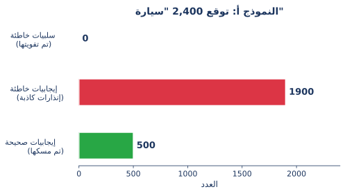
- Recall: 500 / 500 = 100%
- Precision: 500 / 2,400 ≈ 20.8%
النموذج (ب): “الحذر”
لا يتحدث إلا عندما يكون متأكداً جداً
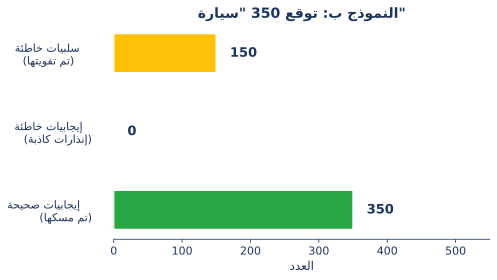
- Recall: 350 / 500 = 70%
- Precision: 350 / 350 = 100%
🎯 محاكي: موازنة الدقة والكمية
حرك المنزلق وشاهد كيف يتأثر أداء النموذج بتغيير “عتبة الثقة”
🔓 متساهل (صيد كثير)
0.50
🔒 حذر (تأكد تام)
✅ صيد صحيح
45
❌ إنذار خاطئ
10
⚠️ صيد ضائع
5
هذا الوضع متوازن ومناسب لأغلب الحالات.
🧠 النموذج
درجات الثقة الخام (Confidence)
درجات الثقة الخام (Confidence)
↓
⚙️ بوابة العتبة (Threshold)
هل Score ≥ العتبة؟
هل Score ≥ العتبة؟
↓
🏷️ التصنيف
"سيارة" / "ليست سيارة"
"سيارة" / "ليست سيارة"
النموذج يعطي درجات احتمالية، وليس قرارات نهائية:
“أنا متأكد بنسبة 72% أن هذه سيارة.”
نحن من نقرر التصنيف النهائي:
- التصنيف: أعلى درجة تفوز (
top1) - الاكتشاف: تظهر الصناديق التي تتجاوز عتبة الثقة المحددة فقط.
عرض تفاعلي: مقايضة العتبة (Threshold Trade-off)
المقايضة: الضبط مقابل الاستدعاء
رفع أو خفض عتبة الثقة يغير التوازن:
🎯 عتبة عالية (0.80)
صارم — لا يمر إلا “المتأكد منه”
↑ ضبط (Precision) عالي (إنذارات خاطئة أقل)
↓ استدعاء (Recall) منخفض (تفويت سيارات أكثر)
🔍 عتبة منخفضة (0.20)
متساهل — يمسك كل شيء
↑ استدعاء (Recall) عالي (تفويت أقل)
↓ ضبط (Precision) منخفض (إنذارات خاطئة أكثر)
F1 Score: موازنة الضبط والاستدعاء
ما هو الرقم الوحيد الذي يجمع الاثنين معاً؟
\[F_1 = 2 \times \frac{Precision \times Recall}{Precision + Recall}\]
وجود صفر في أي من المقياسين يسحب Score الكلية للأسفل — لا يمكنك الاختباء وراء رقم واحد قوي.
F1 Score: مقارنة النماذج
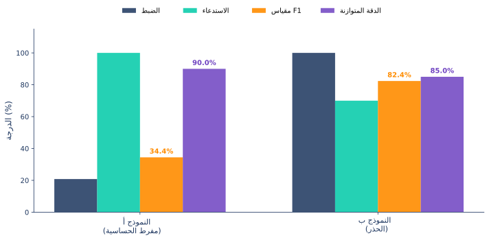
F1 Score كشف عيب النموذج (أ): الـ 1,900 إنذار خاطئ رفعت الاستدعاء ولكنها دمرت الضبط — F1 Score = 34.4%.
اختيار العتبة المناسبة
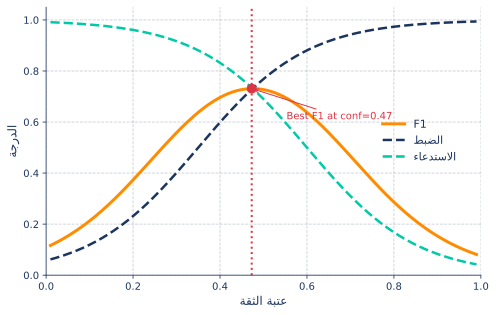
تقوم Ultralytics بحفظ رسوم F1_curve.png و R_curve.png في نتائج التدريب تلقائياً.
دراسة حالة: ترجمة المقاييس إلى عوائد (ROI)
المقاييس مثل الدقة و F1 رائعة للمهندسين، ولكن الإدارة تتحدث لغة واحدة: المال.
السيناريو: مصنع رقمي ينتج لوحات دوائر إلكترونية متطورة. نقوم بنشر نموذج YOLO لاكتشاف “اللحام المعيب” قبل شحن اللوحات للعملاء.
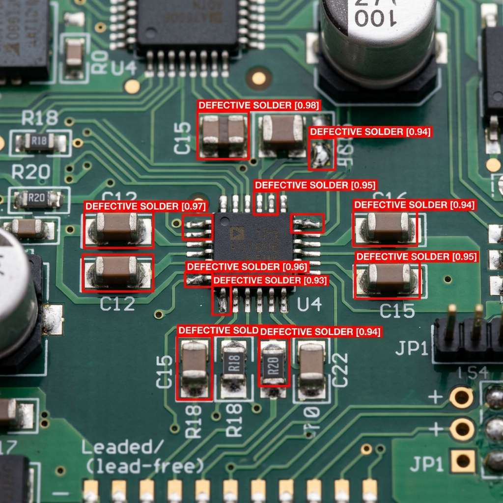
تكلفة كل توقع
كل توقع في مصنعنا الرقمي له نتيجة مالية ملموسة:
- ✅ إيجابي صحيح (TP): تم اكتشاف العيب، وتم استبعاد اللوحة مبكراً. (لا خسارة إضافية).
- ✅ سلبي صحيح (TN): اللوحة سليمة وتم شحنها للعميل. (لا خسارة).
- ❌ سلبي خاطئ (FN): لوحة معيبة شُحنت للعميل بالخطأ. التكلفة: 500$ (ضمان، شحن، ضرر بالسمعة).
- ⚠️ إيجابي خاطئ (FP): لوحة سليمة تم وسمها كمعيبة. تحتاج فحصاً يدوياً. التكلفة: 25$ (عمالة).
مصفوفة الارتباك المالية
إذا اختبرنا نموذجنا على دفعة مكونة من 10,000 لوحة (حيث 5% منها معيبة فعلاً):
| Prediction: معيبة | Prediction: سليمة | |
| الحقيقة: معيبة | ✅ TP التكلفة: 0$ |
❌ FN (تفويت) التكلفة: 500$ لكل واحدة |
| الحقيقة: سليمة | ⚠️ FP (إنذار كاذب) التكلفة: 25$ لكل واحدة |
✅ TN التكلفة: 0$ |
إجمالي الخسارة المالية = \((FN \times \$500) + (FP \times \$25)\)
خطوط الأساس: تكلفة القرارات “الغبية”
ماذا لو لم نستخدم الذكاء الاصطناعي أصلاً؟ لنلقِ نظرة على الأثر المالي لأبسط استراتيجيتين “تقليديتين”:
🚢 “اشحن كل شيء”
افترض أن كل اللوحات سليمة
- السلبيات الخاطئة (FN): 500
- التكلفة: \(500 \times 500\)
- إجمالي الخسارة: $250,000
⚙️ “استبعد كل شيء”
افترض أن كل اللوحات معيبة
- الإيجابيات الخاطئة (FP): 9,500
- التكلفة: \(9,500 \times 25\)
- إجمالي الخسارة: $237,500
الخلاصة: حتى النموذج “البسيط” يوفر للشركة مئات الآلاف من الدولارات في كل دفعة. والآن دعونا نرى كم يمكننا توفيره أكثر عبر التحسين.
التحسين من أجل الربح، وليس فقط F1
تذكر كيف يوازن F1 Score بين الضبط والاستدعاء؟ عندما يتعلق الأمر بالمال، يتغير الميزان. تفويت عيب واحد (FN) أغلى بـ 20 مرة من الإنذار الخاطئ (FP).
الخيار (أ): أعلى درجة F1
عتبة متوازنة (conf=0.35)
- لوحات معيبة تم تفويتها (FN): 81 لوحة \(\times \$500\) = \(\$40,500\)
- إنذارات كاذبة (FP): 0 لوحة \(\times \$25\) = \(\$0\)
- إجمالي الخسارة: $40,500
الخيار (ب): أعلى عائد (ROI)
عتبة متساهلة (conf=0.20)
- لوحات معيبة تم تفويتها (FN): 22 لوحة \(\times \$500\) = \(\$11,000\)
- إنذارات كاذبة (FP): 2 لوحة \(\times \$25\) = \(\$50\)
- إجمالي الخسارة: $11,050
عبر خفض العتبة وقبول القليل من الإنذارات الخاطئة، وفرنا للشركة قرابة 30,000$ إضافية في كل دفعة. لقد قمنا بالتحسين من أجل مقياس العمل التجاري، وليس مقياس تعلم الآلة فقط.
منحنى التكلفة (The Cost Curve)
تماماً كما رسمنا منحنى F1، يمكننا رسم منحنى التكلفة لإيجاد العتبة المثالية للنشر.
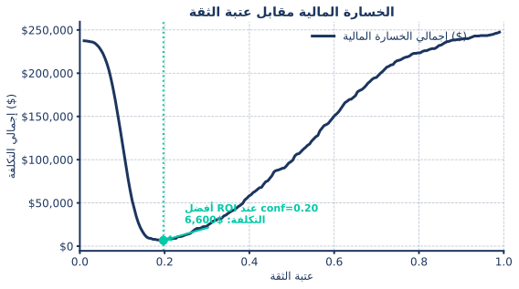
🧪 معمل 4أ: التقييم القائم على العائد (ROI)
الآن حان دورك لتلعب دور قائد الأعمال!
- افتح ملف المعمل
labs/04a_roi_evaluation.ipynb - انتقل إلى قسم “ROI-Driven Evaluation”.
- ابحث عن العتبة المثالية لدراسة حالة “اكتشاف سرقة المتاجر” في المعمل 4أ.
ملخص السيناريو:
- الهدف: تقليل إجمالي الخسارة المالية.
- التكاليف: تفويت سارق (50\() مقابل اتهام خاطئ لشخص بريء (2,500\)).
معضلة العتبة
كل المقاييس التي رأيناها حتى الآن (\(F1\), \(ROI\), \(Precision\)) تتطلب منا اختيار عتبة أولاً.
🎯 رؤية “القرار”
مفيدة عند النشر النهائي. “عند عتبة 0.45، كم سيكون ربحي؟”
- اختيار نقطة واحدة على المنحنى.
- التحسين لحالة عمل محددة.
- مفيدة للقرارات التشغيلية.
📊 رؤية “النموذج”
مفيدة للمقارنة بين النماذج (Benchmarking). “هل هذا النموذج أفضل جوهرياً من النموذج السابق؟”
- التقييم عبر جميع العتبات الممكنة.
- مقارنة معماريات النماذج بشكل عادل.
- هنا يأتي دور “متوسط الضبط” (Average Precision - AP).
منحنى PR ومتوسط الضبط (AP)
الخطوة 1: الجمع نأخذ كل توقع “سيارة” قام به النموذج عبر كامل مجموعة الاختبار.
الخطوة 2: الفرز نرتبها من أعلى درجة ثقة (مثلاً \(0.99\)) إلى أقل درجة (مثلاً \(0.10\)).
الخطوة 3: الحساب نحسب الضبط والاستدعاء عند كل خطوة في تلك القائمة المرتبة.
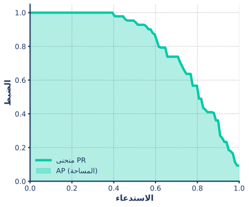
متوسط الضبط (AP) هو ببساطة المساحة الموجودة تحت منحنى الضبط والاستدعاء (PR)!
ولكن هل المكان يهم؟
الضبط والاستدعاء يقيسان ما إذا كان التصنيف صحيحاً. أما في اكتشاف الكائنات، يجب على النموذج أيضاً تحديد المكان الصحيح.
Prediction الواثق الموضوع في المكان الخاطئ لا يزال توقعاً خاطئاً.
هنا يأتي دور التقاطع فوق الاتحاد (Intersection over Union - IoU).
التقاطع فوق الاتحاد (IoU)
ما مدى دقة تداخل المربع المتوقع مع المربع الحقيقي (Ground Truth)؟
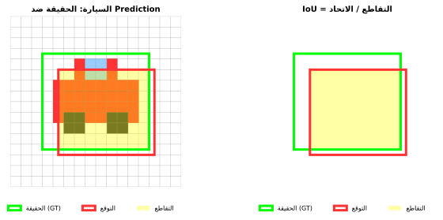
قاعدة عامة: يعتبر Prediction “إيجابياً صحيحاً” (TP) إذا كان الـ IoU أكبر من 0.50.
“العقوبة المزدوجة” في IoU
يجب أن يكون Prediction دقيقاً في المكان (\(IoU \ge 0.5\)) ليُحسب كـ إيجابي صحيح (TP).
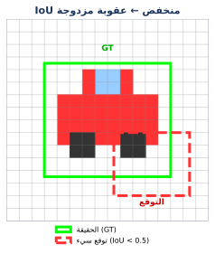
ماذا يحدث عندما يكون \(IoU < 0.5\)؟
يؤلم درجتك مرتين:
- FP: الصندوق السيء يُحسب كإنذار خاطئ.
- FN: الشيء الحقيقي يُحسب كأنه تم تفويته.
توقع واحد سيء المكان = يُعاقب النموذج كأنه اكتشاف إضافي خاطئ و كائن ضائع في نفس الوقت.
التعامل مع الاكتشافات المتعددة
سؤال شائع: “ماذا لو توقع النموذج صناديق متعددة لنفس الشيء تماماً؟”
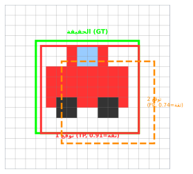
القاعدة: حقيقة واحدة = TP واحد فقط
- الفائز: صاحب أعلى IoU (Prediction 1) يصبح هو الإيجابي الصحيح (TP).
- المكرر: الصناديق الإضافية (Prediction 2) تصبح إيجابيات خاطئة (FP).
متوسط متوسط الضبط (mAP)
بمجرد حصولنا على AP لكل فئة (سيارات، مشاة، أشجار، إلخ)، نأخذ ببساطة المتوسط الحسابي لها.
\[mAP = \frac{AP_{cars} + AP_{pedestrians} + AP_{trees} + ...}{Total\ Number\ of\ Classes}\]
- mAP50: الدقة عند اعتبار الاكتشافات “السهلة” فقط (IoU > 0.50).
- mAP50-95: تقييم صارم يأخذ متوسط الدقة عبر عدة عتبات IoU (من 0.50 إلى 0.95).
التجزئة: IoU للأقنعة (mIoU)
في التجزئة (Segmentation)، نقوم بتقييم مدى تداخل البكسلات، وليس فقط مربعات الإحاطة.
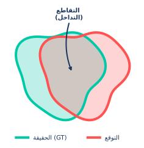
mIoU (مؤشر جاكارد)
\[ \begin{aligned} \text{mIoU} &= \frac{Area\ of\ Overlap}{Area\ of\ Union} \\[12pt] &= \mathbf{\frac{TP}{TP + FP + FN}} \end{aligned} \]
في Ultralytics، يعتبر Mask mAP هو المقياس الأساسي لمهام التجزئة، ويتم حسابه باستخدام عتبات IoU على مستوى البكسل.
معامل دايس (Dice Coefficient / F1)
المقياس الأكثر شيوعاً في الذكاء الاصطناعي الطبي. وهو متطابق رياضياً مع F1 Score على مستوى البكسل.
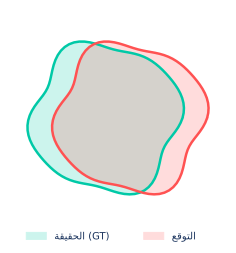
\[ \begin{aligned} \text{Dice} &= \frac{2 \times Area\ of\ Overlap}{Area\ of\ GT + Area\ of\ Pred} \\[12pt] &= \mathbf{\frac{2TP}{2TP + FP + FN}} \end{aligned} \]
لماذا معامل دايس؟ لأنه أفضل للكائنات الصغيرة جداً (مثل الأورام في الصور الطبية) ويوفر عقوبة أكثر توازناً للأخطاء.
التحقق من النموذج (YOLO CLI/Python)
نستخدم وضع val لتقييم النموذج المدرب. تقوم YOLO تلقائياً بإنشاء رسوم بيانية مثل (confusion_matrix.png, PR_curve.png) في مجلد runs/detect/val.
مرجع التوثيق: رؤى تقييم النموذج
قراءة نتائجك: تشغيل val()
عند تشغيل model.val()، تحصل على كائن مقاييس يحتوي على جميع الأرقام الرئيسية:
from ultralytics import YOLO
model = YOLO("best.pt")
metrics = model.val(data="data.yaml")
# الوصول للمقاييس الرئيسية:
print(f"mAP@0.5: {metrics.box.map50}" # عتبة IoU متساهلة
print(f"mAP@0.5-0.95: {metrics.box.map}" # متوسط صارم عبر 10 عتبات IoU
print(f"Precision: {metrics.box.mp}" # الضبط الإجمالي
print(f"Recall: {metrics.box.mr}" # الاستدعاء الإجماليمرجع التوثيق: نتائج التحقق
ماذا لو كشفت المقاييس عن مشكلة؟
يمكنك الآن قراءة نتائج التحقق — ولكن ماذا تفعل عندما تبدو الأرقام سيئة؟
الأسباب الأكثر شيوعاً هي:
- اختلال توازن الفئات (Class imbalance) — تجاهل الفئات النادرة أثناء التدريب.
- الإفراط في التخصيص (Overfitting) أو عدم الكفاية (Underfitting) — النموذج لم يعمم بشكل جيد.
- معلمات فائقة (Hyperparameters) ضعيفة — معدل التعلم، توقف مبكر جداً أو متأخر جداً.
دعونا نمر على كل واحدة منها.
اختلال توازن الفئات: إصلاح الانحياز
كيف نمنع النموذج من تجاهل الفئات النادرة أثناء التدريب؟
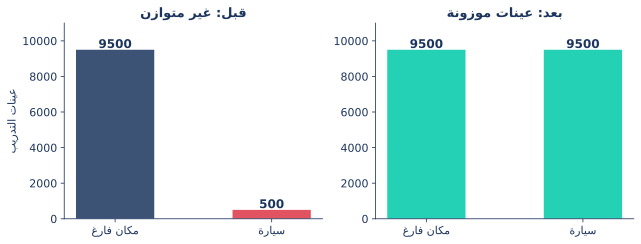
هنا نقوم بـ “زيادة العينات” (Oversampling) للفئة الأقلية (السيارة) لجعلها قابلة للتعلم.
دليل تقني: موازنة الفئات مع YOLO
طيف التدريب
كل جولة تدريب تقع في مكان ما على هذا الطيف — معرفة أين تقع هي الخطوة الأولى لإصلاحها.
🔴 الإفراط (Overfitting)
النموذج يحفظ بيانات التدريب بدلاً من تعلم الأنماط العامة.
- دقة التدريب (mAP) >> دقة التحقق (Val mAP).
- خسارة التحقق تبدأ في الارتفاع.
سعة النموذج أكبر بكثير من البيانات المتاحة.
🟢 التعميم (Just Right)
النموذج يعمم الأنماط على البيانات الجديدة.
- دقة التدريب \(\approx\) دقة التحقق، وكلاهما مرتفع.
- كلتا الخسارتين تتقاربان عند مستوى منخفض.
هذا هو الهدف — ابقَ هنا.
🟠 عدم الكفاية (Underfitting)
النموذج لم يتعلم الأنماط أبداً.
- دقة التدريب والتحقق كلاهما منخفض.
- الخسارة بالكاد تنخفض.
سعة النموذج قليلة جداً أو التدريب غير كافٍ.
🔴 الإفراط (Overfitting): الأعراض
يحفظ النموذج بيانات التدريب بدلاً من تعلم الأنماط العامة.
ماذا تلاحظ:
- خسارة التدريب ↓، بينما خسارة التحقق ↑.
- دقة التدريب (mAP) ترتفع، بينما دقة التحقق تتوقف.
- فجوة متزايدة بين المنحنيين.
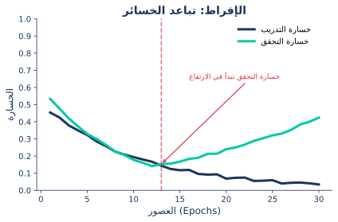
🔴 الإفراط (Overfitting): الحلول
تنوع أكبر في البيانات (أفضل علاج)
مشاهد متنوعة لا يستطيع النموذج حفظها بسهولة.
التعزيز (Augmentation)
Mosaic, flip, blur — مفعلة افتراضياً في YOLO.
نموذج أصغر
مجموعة بيانات صغيرة؟ ابدأ بـ yolo11n أو yolo11s.
ابدأ بـ التعزيز + صبر (patience). إذا استمر الإفراط، ارفع قيمة weight_decay.
🟠 عدم الكفاية (Underfitting): الأعراض
لم يتعلم النموذج الأنماط — إما لأنه بسيط جداً، أو مقيد للغاية، أو لم يتم تدريبه كفاية.
ماذا تلاحظ:
- كل من دقة التدريب والتحقق (mAP) منخفضة ومسطحة.
- الخسارة بالكاد تتحرك بعد العصور الأولى.
- المنحنيان قريبان من بعضهما — لكنهما عالقان عند مستوى “فشل” مرتفع.
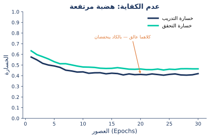
🟠 عدم الكفاية (Underfitting): الحلول
🟢 التدريب الصحي: “التعميم”
الحالة المثالية:
- مقاييس التدريب والتحقق ترتفع معاً.
- كلتا الخسارتين تنخفضان بثبات وتستقران عند مستوى منخفض.
- النموذج يعمم — يعمل جيداً على بيانات لم يرها من قبل.
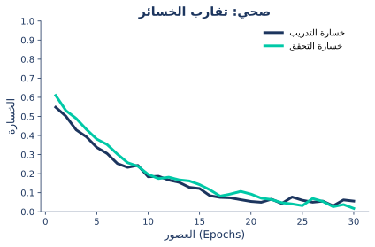
تشخيص جولة التدريب
استخدم هذا كمرجع عند قراءة منحنيات الخسارة الخاصة بك.
| ما تراه | المشكلة | الإجراءات |
|---|---|---|
| دقة التدريب >> دقة التحقق، خسارة التحقق ترتفع | 🔴 إفراط (Overfitting) | أضف تعزيزاً · زد weight_decay · اضبط patience |
| كلتا الدقتين منخفضة ومسطحة، الخسارة بالكاد تتحرك | 🟠 عدم كفاية (Underfitting) | نموذج أكبر · زيادة epochs · ارفع lr0 · قلل weight_decay |
| كلتا الخسارتين تتقاربان، الدقة ترتفع | 🟢 صحي (Healthy) | استمر في التدريب أو ابدأ النشر |
راقب كلا المنحنيين دائماً. دقة تدريب 99% لا تعني شيئاً إذا كان أداء التحقق فاشلاً.
أدواتك لتحسين التدريب
يمكنك الآن تشخيص المشكلة — إليك الأدوات (الروافع) لإصلاحها.
| الأداة | ما تعالجه |
|---|---|
| تعزيز البيانات (Data Augmentation) | الإفراط، مجموعات البيانات الصغيرة، اختلاف ظروف التصوير |
| معدل التعلم (Learning Rate) | التدريب غير المستقر أو المتوقف |
| اضمحلال الوزن (Weight Decay) | الإفراط (منع النموذج من الحفظ) |
| التوقف المبكر (Early Stopping) | إهدار الموارد الحاسوبية، الإفراط |
ماذا يفعل تعزيز البيانات (Data Augmentation)
المفهوم: زيادة تنوع بيانات التدريب اصطناعياً عبر تطبيق تحويلات على الصور الموجودة.
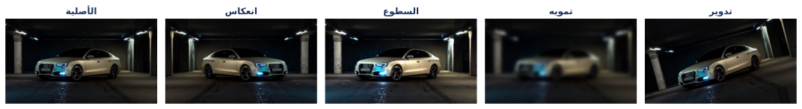
متى يساعد:
- الإفراط (النموذج يحتاج تنوعاً أكبر).
- مجموعات البيانات الصغيرة.
- اختلاف ظروف التصوير (إضاءة/زوايا مختلفة في الواقع).
تعزيز البيانات (Python)
YOLO تدعم مكتبة Albumentations بشكل طبيعي لتحسين قوة النموذج:
import albumentations as A
from ultralytics import YOLO
model = YOLO("yolo26n.pt")
# تعريف تحويلات Albumentations مخصصة
custom_transforms = [
A.Blur(blur_limit=7, p=0.5),
A.RandomCrop(width=256, height=256),
A.HorizontalFlip(p=0.5),
A.RandomBrightnessContrast(brightness_limit=0.2, contrast_limit=0.2, p=0.5),
]
# تدريب النموذج مع التحويلات المخصصة
model.train(data="data.yaml", epochs=100, augmentations=custom_transforms)مرجع التوثيق: تكامل Albumentations
المعلمات الفائقة: معدل التعلم (lr0)
🔴 مرتفع جداً: قفزات/ضجيج. النموذج “يقفز” فوق الحل الأمثل.
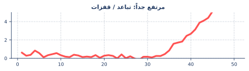
🔵 منخفض جداً: خط مسطح. النموذج “خجول” جداً لدرجة لا تسمح له بالتعلم.
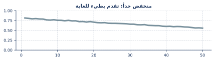
🟢 مناسب تماماً: انخفاض سلس وسريع نحو مستوى منخفض.
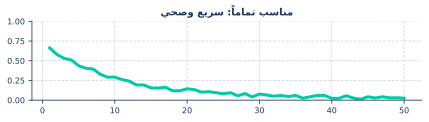
المعلمات الفائقة: اضمحلال الوزن (Weight Decay)
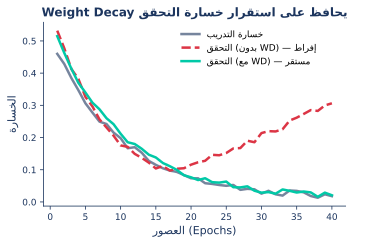
| الإعداد | التأثير |
|---|---|
| منخفض جداً | حفظ البيانات ← 🔴 إفراط (Overfitting) |
| مرتفع جداً | قيود زائدة ← 🟠 عدم كفاية (Underfitting) |
المعلمات الفائقة: التوقف المبكر (Early Stopping)
التقييم: أهم النقاط المستفادة
- المقاييس: استخدم mAP50 للتحقق السريع من صحة النموذج، و mAP50-95 لتقييم صارم جاهز للإنتاج.
- شخص منحنياتك: الإفراط، عدم الكفاية، والتدريب الصحي لكل منها بصمة واضحة ومميزة.
- أصلح بذكاء: التعزيز (Augmentation)، اضمحلال الوزن (Weight Decay)، والتوقف المبكر تغطي غالبية مشاكل التدريب.
🧪 معمل 4ب: الأداء الفني والتشخيص
الآن بعد أن عرفت كيفية قراءة المنحنيات، فلنصلح نموذجاً!
- افتح ملف المعمل
labs/04b_evaluation_technical.ipynb - قارن بين أحجام نماذج YOLO المختلفة (nano ضد small).
- تحقق من حسابات التقاطع فوق الاتحاد (IoU).
- حدد علامات الإفراط (Overfitting) في جولة تدريبية.
الهدف: تعلم التمييز بين النموذج الذي “يحفظ” والنموذج الذي “يعمم”.
عندما تكون مقاييس التحقق لنموذجك قوية، فهذا يعني أنه جاهز للخطوة التالية — نقله إلى الإنتاج.
8. النشر (Deployment)
نقل النموذج إلى مرحلة الإنتاج.
تصدير النماذج (Exporting)
ملف PyTorch .pt ممتاز للبحث، لكنه بطيء في الإنتاج. حول نموذجك إلى صيغ محسنة باستخدام وضع export!
مرجع التوثيق: التصدير
الاستدلال مع النماذج المصدرة
لا تحتاج إلى كود نشر معقد لاستخدام نماذجك المصدرة. تقوم واجهة Ultralytics البرمجية بتحميلها تماماً مثل ملف PyTorch .pt العادي!
مرجع التوثيق: Prediction بالنماذج المصدرة
خاتمة
ملخص الدورة
منظومة Ultralytics
🎯
المهامDetect · Segment · Pose · OBB
⚡
الحلولمنطق متقدم، جاهز للاستخدام
🗂️
البياناتهيكلة التسميات لكل مهمة
🛠️
الأدواتCLI · YAML · المعلمات الفائقة
📊
التقييممقاييس · عتبات · منحنيات PR
🚀
النشرتصدير لسرعة الإنتاج
ماذا بعد؟
📷
الأمن الذكياكتشاف المتسللين، المركبات، والأنشطة غير الطبيعية في الوقت الفعلي.
🏥
التصوير الطبيتحديد الأورام، الآفات، أو عد الأدوات الجراحية في الأشعة.
🚗
السيارات ذاتية القيادةاكتشاف المشاة، العلامات، ومخاطر الطريق بسرعات عالية.
🛒
تحليلات التجزئةتتبع حركة الزوار، مخزون الرفوف، وسلوك العملاء.
شكراً لكم!
شكراً جزيلاً لاهتمامكم
هل لديكم أي أسئلة؟